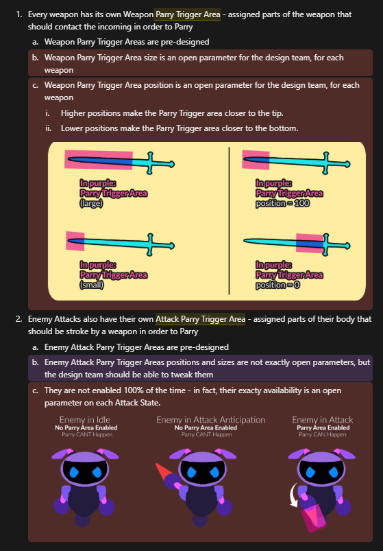
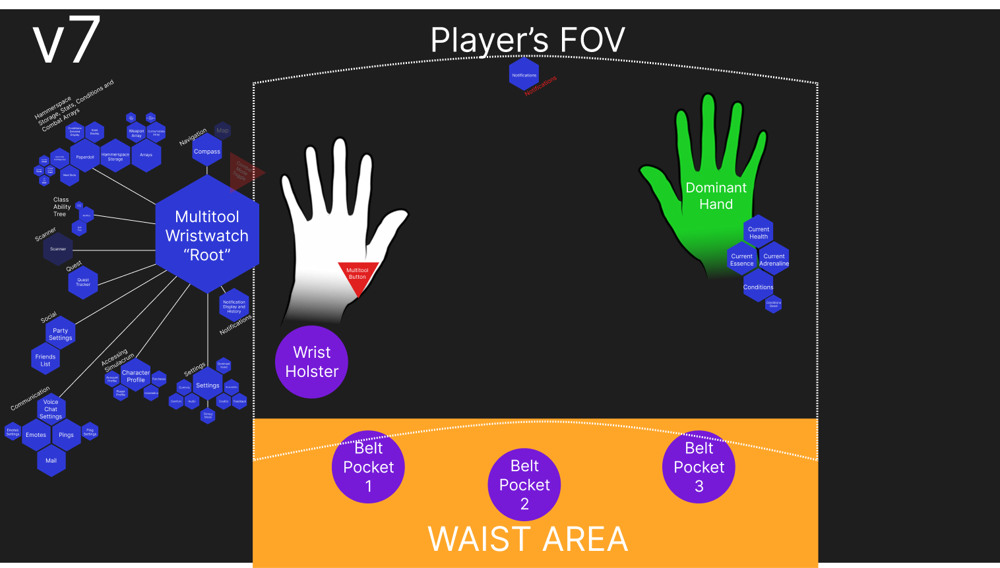
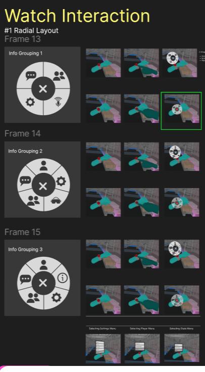

Highstreet Arc and Calamity
This are actually 2 projects, spanning 30 months, converging into something: a multiplayer VR arena with elements of RPG and Roguelike!
Oculus LinkMy responsabilities in the 30-month time changed over distinct moments:
Calamity
This is the second, final part of the project. Expanding on ARC (described below), adding Multiplayer, RPG and Roguelike mechanics
Technical Game Designer and System DesignTo be released in 2026
Click here to read Unity's feature Case Study Article about Calamity!- Basal Mechanics design (Such as Height calculation, Hand mechanics, Movement, Jump, Saved Information)
- Technical Game Design on Physics, using DOTS, done with the programmers
- System Design and Technical Design on base and complex Combat Mechanics. This includes particularities such as the collision and damage detection, enemy AI, wave spawn, and how Combat relates to every other mechanic in the game
- Engine implementations on base combat mechanics, collisions, enemy behaviours; and fine tuning in combat
- Design directions for the player's FOV, and how we'd organize the basic UX of storing and picking up objects, or the core UI interactions
- Provided UX Design with many diagrams and hierarchy of informations to make sure UX would fit precisely the game mechanics
- Balance and fine tuning of physics, locomotion, damage detection, player stats, enemy stats, progression through levels, enemy AI, enemy waves
- XP and Level progression calculation - on individual enemy, to all difficulties, considering every group, and creating a progression based on gameplay time
- Tool Design on the Spreadsheet system we used for easier access of open variables and quick iteration, responsive in-build
- Design Review on each Build, making sure all issues planned for that build were addressed according to design, raising any new ones and adjusting either scope or systems, as needed
ARC Demo
Prototype of VR Arena, first part of Calamity, highlight of Token 2049 Singapore, 2024
Technical Game Designer and System Design
Released September, 2024
- System Design by turning every single mechanic into a large mechanics dictionary, selecting which ones would better reinforce the loop, scope, prioiritize and ruleset so that the game could be delivered within time and technical constraint
- This assignment was delivered together with production and tech lead, in order to allow the game to be shipped
- Technical Game Design of VR physics using Hurricane VR and how it would manifest and respond in our context
- Design Guidelines - sketches, 3D models, physical objects - for the artists, sound designers and programmers to use as reference for every game element
- Roadmapping the Builds and requesting specifics to be on each, following the long-term delivery
- Combat Design, which includes basal core mechanics, swing and collision, blocking, health systems, loop and enemy AI
- The game got the VR Game Award in Token 2049, which allowed us to proceed with the Multiplayer Version
The Team
For this design, I was part of a full design team, each responsible for specific parts.f Here's my best effort to credit the very cool people I had the chance to work with - and, with great happiness, become friends with!
The project had Matt Fleming as Game Director
Artur Costa and Kara Stover directed the Game Design team in several aspects
In the Design Team, together with me, we had Emma Gallangher, Kumar Daryanani, Percy Ali, Renée Pollet and Thomas Stushnoff - each on one specific system!
Guilherme Martins was our Level Designer
And, of course, a big design team of writing, engineering, art, UI/UX, production and sound!
Design Processes
Below, just some sketches and illustrations from Design Documents.
Just things I thought were a little cute. I don't think you'd enjoy seeing prints of spreadsheets and diagrams! haha


